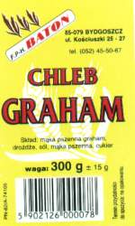

produkowany na bazie maki pszennej, zytniej i pszennej razowej o zwiekszonej zawartosci blonnika, witamin i magnezu, bardzo dobry w smaku, zdrowy, daje uczucie sytosci, zapobiega tyciu, wzbogaca przemiane materii, zalecany przy nadcisnieniu i nadkwasocie |
 |